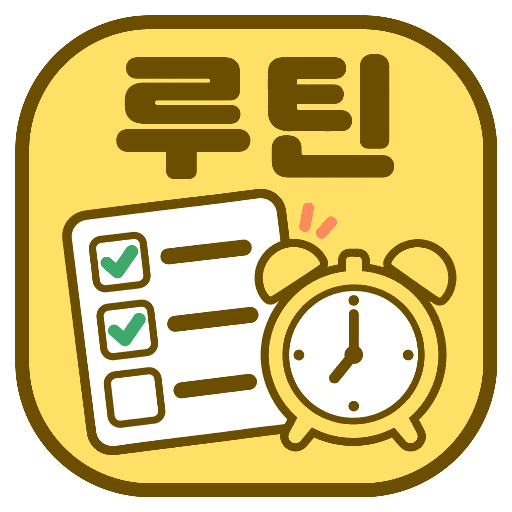
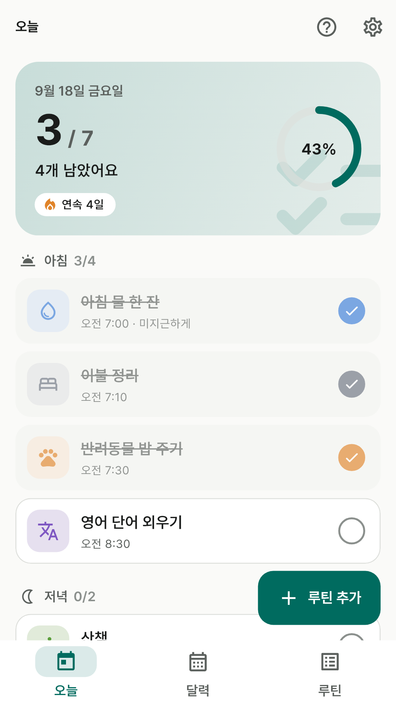
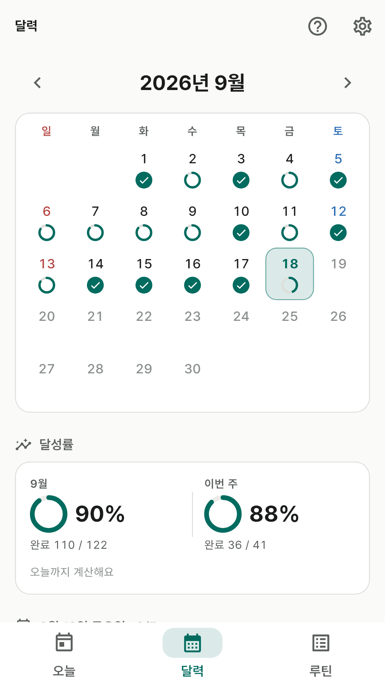
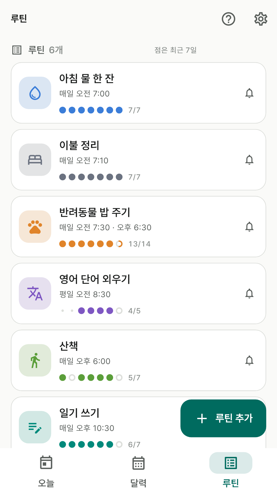
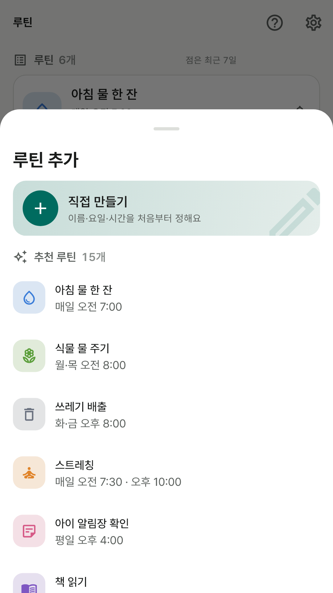
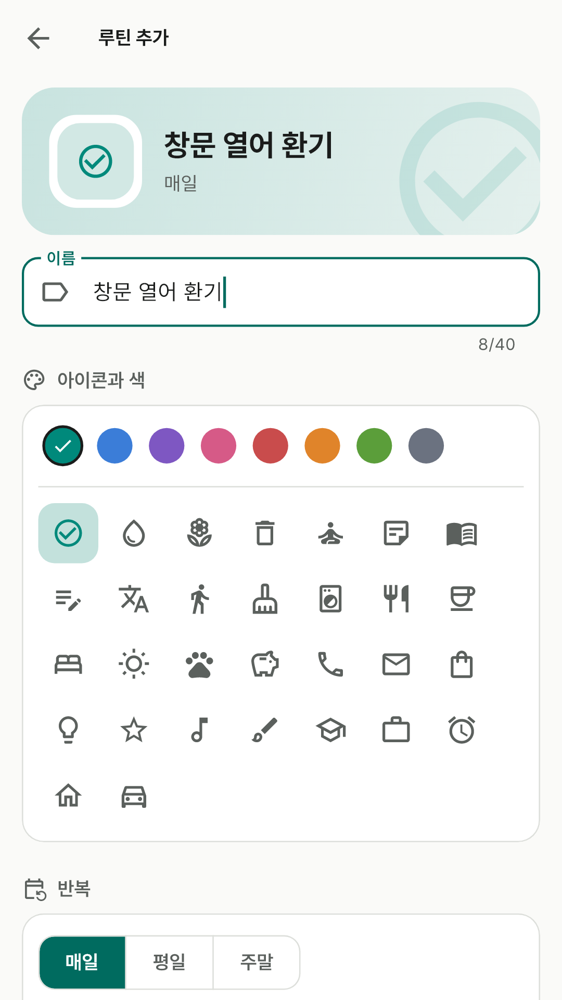

오늘 할 일은 체크 한 번
오늘 요일에 해당하는 루틴이 아침·낮·저녁·밤으로 묶여 시간 순서로 나와요. 카드를 누르면 완료되고 남은 개수와 달성률 고리가 바로 바뀌어요.
아침 물 한 잔부터 쓰레기 배출까지.
반복하는 일을 등록하고 알림을 받아 체크 한 번으로 끝내요.

오늘 요일에 해당하는 루틴이 아침·낮·저녁·밤으로 묶여 시간 순서로 나와요. 카드를 누르면 완료되고 남은 개수와 달성률 고리가 바로 바뀌어요.
매일, 평일, 주말, 또는 고른 요일만 반복해요. 하루에 여러 번 하는 일은 시간을 여러 개 넣어 시간마다 따로 알림을 받아요.
날짜마다 그날의 달성률이 작은 원으로 보여요. 깜빡한 날은 달력에서 체크할 수 있고 이번 달 달성률도 함께 보여줘요.
루틴마다 색 8가지와 아이콘 30개 중에 골라요. 처음이라면 추천 루틴 15개에서 고르고 시간만 맞추면 끝이에요.





화면의 루틴과 기록은 기능을 설명하기 위한 예시예요.
루틴과 체크 기록을 개발자 서버로 보내지 않아요. 앱 전용 기기 저장소에만 담고, 인터넷이 없어도 전부 동작해요.
Android 자동 백업이 켜져 있으면 사용자 본인의 Google 계정 백업에 포함될 수 있어요. 앱 제거 또는 데이터 삭제 시 기록도 사라질 수 있어요. 알림은 권한과 기기 절전 설정에 따라 도착 시점이 달라질 수 있어요.